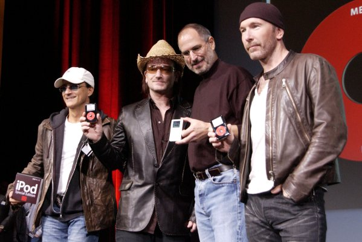

Chương 31

hi iPod trở thành một hiện tượng, nó đã khiến cho mọi người, từ các ứng cử viên Tổng thống, đến những nhân vật nổi tiếng, những đôi lứa đang hẹn hò, cho tới nữ hoàng Anh, và bất kì người nào khác mang chiếc tai nghe màu trắng đều có thể nhận được câu hỏi: “Có gì trong chiếc iPod của bạn?”
Trò chơi trong phòng khách dọn đi khi Elisabeth Bumiller viết một mẩu tin trên tờ New York Times vào đầu năm 2005, mổ xẻ câu trả lời mà tổng thống George w. Bush đưa ra khi bà hỏi ông câu đó. Bà đã kể lại: “Chiếc iPod của tổng thống Bush thiên về dòng nhạc và các ca sĩ nhạc đồng quê truyền thống, ông ấy có những bộ tuyển chọn của Van Morrison, người có một bài hát mà Bush đặc biệt yêu thích Brown Eyed Girl (Cô gái mắt nâu), và của John Fogerty, hẳn nhiên có thể dự đoán được là bài Centerfield. Bà đã nhờ một biên tập viên của tạp chí âm nhạc Rolling stone tên là Joe Levy phân tích bộ tuyển chọn và ông này đã bình luận: “Điều thú vị là ở chỗ ngài Tổng thống thích những nghệ sĩ mà họ không mấy ưa ông ta."

Jimmy lovine, Bono, Jobs, and The Edge, 2004
Steven Levy đã viết trong cuốn sách Điều hoàn hảo (The Perfect Thing): “Đơn giản chỉ cần đưa chiếc iPod của bạn cho một người bạn, người hẹn hò với bạn, hoặc một người hoàn toàn xa lạ ngồi kế bên bạn trong một chuyến bay, họ sẽ hiểu được bạn giống như đang lật mở một cuốn sách vậy. Việc mà người nào đó cần làm đơn giản là lướt qua thư viện nhạc của bạn trên vòng xoay điều khiển (click wheel) của chiếc iPod, và nói một cách hình tượng, thì bạn dường như đã bị bóc trần.
Nó không chỉ là cái bạn thích - mà nó còn là cái chỉ ra đích xác: là bạn là người như thế nào.” Và một ngày khi chúng tôi đang ngồi trong phòng khách của Jobs và cùng nghe nhạc, tôi đã hỏi ông để cho tôi xem chiếc iPod của ông. Khi chúng tôi ngồi ở đó, ông ấy đã vuốt nhẹ lướt qua những bài hát yêu thích của mình.
Không có gì ngạc nhiên là ở trong đó có tất cả sáu tuyển tập của một loạt các bài hát bị sao chép lậu của Dylan, bao gồm cả những bài Jobs đã bắt đầu tôn sùng khi ông ấy và Wozniak có khả năng ghi được chúng trên những băng cuộn (reel-to-reel) trước khi những loạt bài này được chính thức phát hành. Thêm vào đó, có 15 album khác của Bob Dylan, từ album đầu tiên của ông “Bob Dylan” (1962), nhưng chỉ đến album “Oh Mercy” (1989). Jobs đã bỏ ra rất nhiều thời gian để tranh luận với Andy Hertzfeld và những người khác rằng những album sau này của Dylan, thực tế bất kỳ album nào của ông ấy sau “Blood on the Tracks” (1975), không còn mạnh mẽ như những album ban đầu. Có một ngoại lệ được ông nhắc tới là bài hát Things Have Changed của Dylan từ bộ phim Wonder Boys phát hành năm 2000. Rất đáng chú ý, khi trong iPod của Jobs không có album Empire Burlesque (1985) mà Hertzfeld đã đem đến cho ông vào buổi cuối tuần khi ông bị trục xuất khỏi Apple.
Một vật rất giá trị khác trên iPod của ông ấy là tài sản âm nhạc của The Beatles, gồm nhưng bài hát từ 17 album của họ: A Hard Day's Night, Abbby Road, Help!, Let It Be, Magical Mystery Tour, Meet the Beatles! và Sgt. Pepper‟s Lonely Hearts Club Band. Những album đơn đã bị cắt bỏ.
The Rolling Stones được xếp tiếp theo với 6 album: Emotional Rescue, Flashpoint, Jump Back, Some Girls, sticky Fingers, và Tattoo You. Những album cCia cả Dylan và The Beatles đều được đưa vào toàn bộ. Nhưng đúng với niềm tin của ông ấy rằng các album có thể và nên được tách ra, những album của Stones và hầu hết các nghệ sĩ khác trong iPod của Jobs chỉ bao gồm ba hay bốn phần. Bạn gái một thời của ông, Joan Baez, đã được dành một phần đáng kể bằng những tuyển tập từ 4 album, bao gồm 2 phiên bản khác nhau của Love Is Just a Four Letter Word.
Những bộ tuyển tập trong iPod của Jobs là gia tài âm nhạc của một thanh niên của những năm trong thập niên 1970 với tâm hồn của thập niên 1960. Đó là Aretha, B. B. King, Buddy Holly, Buffalo Springfield, Don McLean, Donovan, the Doors, Janis Joplin, Jefferson Airplane, Jimi Hendrix, Johnny Cash, John Mellencamp, Simon và Garfunkel, và thậm chí cả The Monkees (I‟m a Believer) và Sam the Sham (Wooly Bully). Chỉ khoảng một phần tư thư viện nhạc là các bài hát của những nghệ sĩ đương thời, như 10000 Maniacs, Alicia Keys, Black Eyed Peas, Coldplay, Dido, Green Day, John Mayer (một người bạn của cả Jobs và Apple), Moby (cũng như thế), U2, Seal, và Talking Heads, về phía nhạc cổ điển, có khoảng vài bản ghi âm của Bach, bao gồm Bản Concerto Brandenburg, và 2 album của Yo-Yo Ma.
Jobs đã nói với Sheryl Crow vào tháng 5 năm 2003 rằng ông hiện đang tải về một vài bài của Eminem, và thừa nhận rằng “Anh ấy bắt đầu lớn lên trong tôi." James Vincent về sau có dẫn ông ấy đến một buổi biểu diễn của Eminem. Thậm chí, ca sĩ nhạc rap này đã bỏ lỡ cơ hội đưa nó vào trong iPod của Jobs. Như Jobs nói với Vincent sau buổi hòa nhạc: “Tôi không biết...” ông ấy sau này đã nói với tôi, “Tôi tôn trọng Eminem như là một nghệ sĩ, nhưng tôi chỉ không muốn nghe nhạc của anh ấy, và tôi không thể liên hệ đến giá trị của anh ấy giống như cách tôi có thể làm với Dylan."
Những bài hát yêu thích của ông ấy không thay đổi qua nhiều năm. Khi chiếc iPad 2 xuất hiện vào tháng 3 năm 2011, ông ấy đã chuyển những bài nhạc yêu thích vào trong đó. Lại một buổi chiều, khi chúng tôi ngồi trong phòng khách của ông, khi ông duyệt qua những bài hát trên chiếc iPad mới của mình, và với một nỗi nhớ êm dịu, nhấn nhẹ lên những bài ông muốn nghe.
Chúng tôi thưởng thức lần lượt các bài hát yêu thích thường lệ của Dylan và Beatles, sau đó ông ấy trở nên suy tư nhiều hơn và nhấn vào một bản thánh ca Gregorian, Spiritus Domini, được thực hiện bởi các thầy tu theo dòng Benedictine. Trong vòng một phút hoặc lâu hơn, ông ấy mất tập trung và hầu như rơi vào trong một trạng thái xuất thần. “Nó thật sự đẹp", ông ấy thì thầm, ông ấy tiếp tục với bản Concerto Brandenburg thứ hai của Bach, và một fu-ga trong The Well-Tempered Clavier, ông ấy nói Bach là nhà soạn nhạc cổ điển yêu thích của ông. Ông đặc biệt thích nghe những sự tương phản giữa hai phiên bản của Goldberg Variations mà Glenn Gould đã thu âm. Bản đầu tiên vào năm 1955 khi Gould là một nghệ sĩ piano hai mươi hai tuổi ít nổi tiếng, và bản thứ hai vào năm 1981, một năm trước khi nghệ sĩ này mất. “Chúng giống như ngày và đêm," Jobs nói sau khi nghe chúng liên tiếp nhau trong một buổi chiều. “Bản đầu tiên thì cởi mở, trẻ trung, rực rỡ, được chơi quá nhanh và giống như một sự soi sáng. Bản sau đó thì thanh đạm và bình dị hơn nhiều. Bạn cảm nhận được một tâm hòn rất sâu sắc của người đã trải nghiệm rất nhiều trong cuộc đời. Nó sâu sắc hơn và uyên bác hơn." Jobs đang ở trong kỳ nghỉ điều trị y tế thứ ba của mình vào buổi chiều khi ông nghe cả hai phiên bản, và tôi đã hỏi ông thích cái nào hơn. “Gould thích bản sau này hơn rất nhiều", ông ấy nói, “Tôi đã từng thích bản cởi mở đầu tiên. Nhưng bây giờ tôi có thể thấy được ông ấy đã đến từ đâu."
Ông ấy sau đó chuyển đến bài hát của những năm 1960, Catch the Wind của Donovan. Khi ông ấy thấy tôi nhìn ngờ vực, ông ấy đã biện bạch, “Donovan đã tạo ra một thứ thật sự tốt, thật sự
như vậy.” ông mở tiếp bài Mellow Yellow, và sau đó thừa nhận rằng có lẽ nó không phải là một ví dụ tốt nhất. “Nó nghe hay hơn khi chúng ta còn trẻ."
Tôi đã hỏi loại nhạc nào từ thời thơ ấu của chúng tôi thật sự còn được giữ lại. ông ấy đã cuộn xuống dưới danh sách trên chiếc iPad và chọn bài hát năm 1969 của Grateful Dead, Uncle John's Band, ông ấy gật gù cùng với lời bài hát “Khi cuộc sống giống như con đường dễ dàng, có một sự nguy hiểm đang ở cửa nhà bạn.” Trong một lúc, chúng tôi đã trở lại với thời điểm xôn xao khi sự dịu êm của những năm 1960 đang kết thúc trong những nốt nhạc chói tai. “ồ, giờ tôi đã có được điều mình muốn biết: rằng ông thực sự là người như thế nào”.
Sau đó ông ấy chuyển đến Joni Mitchell, “Cô ấy có một đứa trẻ mà cô đã cho đi làm con nuôi,” ông ấy nói. “Bài hát này nói về đứa bé gái ấy.” Ông ấy đã nhấn vào bài Little Green, và chúng tôi đã lắng nghe giai điệu thê lương và những lời hát mô tả cảm xúc của một người mẹ đã từ bỏ đứa con của mình. “Vì vậy bạn ký tất cả các giấy tờ bằng tên gia đình / Bạn buồn và bạn cảm thấy tiếc, nhưng bạn không thấy hổ thẹn.” Tôi đã hỏi ông ấy còn thường nghĩ về việc đã bị cho đi làm con nuôi. “Không, không nhiều lắm,” ông ấy nói.
Vào những ngày này, ông ấy nghĩ nhiều hơn về việc đang già đi hơn là sự ra đời của mình.
Điều đó làm ông nghe bài hát tuyệt vời nhất của Joni Mitchell, Both Sides Now, với những lời nhạc về việc già hơn và uyên bác hơn. “Tôi nhìn vào cuộc sống bây giờ từ hai phía, / Từ chiến thắng và thất bại, và vẫn còn bằng cách nào đó, Nó là những ảo ảnh của cuộc sống tôi nhớ lại, Tôi thật sự không biết cuộc sống dù gì đi nữa.” Khi Glenn Gould hoàn thành bản Goldberg Variations của Bach, Mitchell đã ghi âm bài Both Sides Now cách xa nhau nhiều năm. Lần đầu tiên là vào năm 1969 và sau đó trong một phiên bản hết sức đau khổ vào năm 2000. ông ấy đã nghe bản thứ hai. “Thật thú vị khi con người già đi,” ông nhắc thêm.
Ông cũng nói thêm rằng, một vài người không phát triển bình thường theo đúng độ tuổi ngay cả khi họ còn trẻ. Tôi đã hỏi Jobs xem lúc đó, người nào đang xuất hiện trong suy nghĩ của ông. Jobs đáp lại rằng “John Mayer là một trong những nghệ sĩ chơi ghi- ta tốt nhất đã từng tồn tại trong thế giới này và tôi sợ rằng ông ấy đang đánh mất nó”. Jobs thích Mayer và thỉnh thoảng lại ra ngoài ăn tối với ông ở Palo Alto. Năm ông 27 tuổi, Mayer đã tham gia sự kiện Macworld diễn ra vào tháng 1 năm 2004. Tại đây Jobs đã giới thiệu về GarageBand và Mayer dường như đã trở
thành vị khách thường niên tại các buổi sự kiện như thế này. Jobs không thích bản hit có tên là Gravity của Mayer. Lời của bài hát kể về một chàng trai được bao bọc bởi tình yêu nhưng không hiểu sao luôn mơ rằng mình có thể vứt bỏ nó. “Lực hấp dẫn hình như đang chống lại tôi Và lực hấp dẫn lại muốn làm tôi phiền muộn”. Jobs lắc đầu và bình luận rằng “Tôi nghĩ bên trong ông ấy là một đứa trẻ ngoan nhưng ông ấy dường như đã vượt qua khỏi tầm kiểm soát”.
Sau khi nghe xong bản nhạc, tôi hỏi ông ấy một câu hỏi quen thuộc: ông chọn nhóm The Beatles hay Stones? Jobs đã trả lời rằng “Nếu lửa bao phủ toàn nơi đây và tôi được cho phép mang theo một thứ duy nhất, tôi sẽ chộp lấy những đĩa nhạc của ban nhạc The Beatles. Thực ra, việc lựa chọn sẽ khó khăn hơn nhưng không phải là giữa The Beatles hay Stones mà là giữa The Beatles và Dylan. Có thể có ai đó chơi lại được những bản nhạc của Stones nhưng với tôi, không ai có thể làm được như Dylan hay nhóm The Beatles”. Trong khi Jobs đang trầm ngâm nghĩ về quá khứ và xuýt xoa rằng họ là những người may mắn vì được lớn lên cũng những điều kì diệu đó thì con trai của ông, lúc đó 18 tuổi, đi vào phòng. Jobs nói gần như than vãn “Reed không hiểu điều đó”. Cậu ấy đang mặc một chiếc áo phông Joan Baez với dòng chữ “Forever Young” (mãi mãi tươi trẻ) trên áo.
Bob Dylan
Khoảng thời gian duy nhất mà Jobs nhớ rằng bản thân cảm thấy ngượng nghịu khó nói đó là lúc có sự hiện diện của Bob Dylan. Tháng 10 năm 2004, Dylan chơi nhạc gần Palo Alto, còn Jobs vừa hồi phục sau ca phẫu thuật ung thip đầu tiên của mình. Dylan không phải là một người thích giao du, không giống nhip Bono (thành viên nhóm nhạc U2) hay Bowie (Danh ca David Bowie). Bob không phải là bạn của Jobs, và cũng không màng gì đến việc này. Tuy vậy ông đã mời Jobs đến gặp mặt tại khách sạn nơi ông ở trước buổi biểu diễn. Jobs nhớ lại: Chúng tôi ngồi nói chuyện ngoài hiên trong hai giờ. Tôi thực sự hòi hộp, bởi vì ông là một trong những thần tượng của tôi. Và tôi cũng lo rằng ông ấy sẽ không thực sự thông minh như tôi nghĩ, thậm chí có thể trở thành một bức tranh biếm họa của chính mình, như nhiều người khác.
Nhưng tôi đã rất vui mừng, ông thực sự sắc bén, đúng như tất cả những gì tôi hy vọng, ông ấy rất cởi mở và thành thực, ông chỉ nói với tôi về cuộc sống và về quá trình sáng tác của mình, ông ấy nói: “Âm nhạc đến với tôi một cách rất tự nhiên, tôi không phải cố sức sáng tác ra chúng. Nhưng điều đó không còn xảy ra nữa, tôi không thể viết nhạc theo cách đó được nữa”. Sau đó, ông dừng lại và nói với tôi với giọng hơi gằn và cười mỉm, “Nhưng tôi vẫn có thể hát”.
Lần kế tiếp Dylan biểu diễn gần đó, ông đã mời Jobs tham gia vào một chuyến du lịch bằng xe buýt ngay trước buổi diễn. Khi được Dylan hỏi về bài hát yêu thích của mình, Jobs trả lời là bài One Too Many Mornings. Vì vậy, Dylan đã hát bài hát này đêm đó. Sau buổi diễn, khi Jobs đi bộ ra về, chiếc xe buýt du lịch trờ tới, rít phanh dừng lại. Cánh cửa mở ra: “Thế nào, anh đã nghe bài hát tôi hát tặng anh chưa?” Dylan hỏi. Sau đó, ông lái đi. Khi Jobs nói rằng mình có một ấn tượng khá tốt về giọng hát của Dylan, “ông ấy luôn là một trong những người hùng của tôi”, Jobs hồi tưởng. “Tình yêu của tôi dành cho ông ấy ngày càng lớn thêm qua năm tháng, nó thực sự chín muồi. Tôi không thể hiểu được làm sao ông ấy có thể thành công khi còn quá trẻ như vậy.” Một vài tháng sau khi xem Bob biểu diễn, Jobs đã đưa ra một kế hoạch hoành tráng. Kho Nhạc iTunes nên cung cấp một phần mềm kỹ thuật số ghi âm tất cả các bài hát của Dylan, khoảng hơn 700 bài, với giá là 199 đô-la. Jobs sẽ là người quảng bá cho Dylan trong thời đại kỹ thuật số.
Nhưng Andy Lack của Sony - từng là nhà sản xuất của Dylan, không đồng ý thỏa thuận mà không có một sự nhượng bộ từ iTunes. Ngoài ra, Lack cảm thấy mức giá quá thấp và sẽ làm giảm giá trị của Dylan. “Bob là một kho báu quốc gia”, Lack nói, “và Steve muốn anh ta trên iTunes với mức giá như một món hàng hóa bèo bọt.” cốt lõi của vấn đề nảy sinh giữa Lack, các giám đốc ghi âm và Jobs là: Jobs là người đưa ra các quan điểm về giá cả, không phải họ. Vì vậy, Lack không đồng ý.
“Được rồi, tôi sẽ gọi nói chuyện trực tiếp với Dylan”, Jobs nói. Nhưng Dylan chưa bao giờ xử lý những vấn đề như thế này, vì vậy đại diện của ông - Jeff Rosen đứng ra để sắp xếp những việc trên.
“Đó là một ý tưởng thực sự tồi tệ”, Lack nói và chỉ cho Rosen thấy những con số. “Bob là người hùng trong mắt Steve, ông ta sẽ dễ dàng chấp thuận.” Lack có cả lý do cá nhân và nghề nghiệp để chống lại Jobs, thậm chí nếu cần phải mạnh tay hơn nữa. Vì vậy, ông đã đề nghị Rosen:
“Tôi sẽ viết cho cậu một chi phiếu một triệu đô la vào ngày mai nếu cậu có thể trì hoãn việc thỏa thuận trong thời điểm này.” Như Lack giải thích, đó là một khoản ứng trước cho tiền bản quyền trong tương lai, “một trong những việc mà công ty thu âm thường làm.” Rosen gọi lại và đồng ý sau bốn mươi lăm phút. “Andy đã đưa đề nghị chúng tôi không làm điều đó, nhưng chúng tôi từ chối", ông nhớ lại. “Tôi nghĩ rằng Andy chắc chắn sẽ cho chúng tôi một khoản tạm ứng nếu chúng tôi làm theo.”
Tuy nhiên vào năm 2006, Lack đã rút lui khỏi tư cách là CEO của công ty, khi đó vẫn mang tên Sony BMG, và Jobs mở lại các cuộc đàm phán, ông gửi cho Dylan một chiếc iPod chứa tất cả những bài nhạc của ông ấy, đồng thời Jobs cũng trình bày với Rosen chiến dịch tiếp thị mà Apple có thể thực hiện. Vào tháng Tám, ông công bố một thỏa thuận quan trọng. Nó cho phép Apple bán bộ sưu tập kỹ thuật số tất cả những bài hát mà Dylan từng thu âm với giá 199 đô-la cùng với độc quyền chào hàng album mới của Dylan, Modern Times, cho những đơn đặt hàng trước khi phát hành. “Bob Dylan là một trong những nhà thơ và nhà soạn nhạc đáng ngưỡng mộ nhất trong thời đại của chúng ta, đối với tôi ông là một người hùng,” Jobs nói tại lễ công bố. Bộ tuyển tập 773 bao gồm bốn mươi hai bản thu hiếm, ví dụ một băng ghi âm bài hát Wade in the Water tại một khách sạn ở Minnesota vào năm 1961, một phiên bản năm 1962 của bài Handsome Molly trong buổi hòa nhạc trực tiếp tại Gaslight Café ở Greenwich Village, phần trình diễn tuyệt của vời bài Mr. Tambourine Man trong Liên hoan nhạc dân gian Newport năm 1964 (chương trình yêu thích của Jobs) và một phiên bản nhạc mộc (acoustic) của bài Outlaw Blues từ năm 1965.
Theo một phần của thỏa thuận, Dylan sẽ xuất hiện trong một quảng cáo truyền hình của iPod, nhằm giới thiệu những nét nổi bật trong album mới của ông, Modern Times. Đây là một trong những trường hợp đảo khách thành chủ (phản khách vi chủ) kỳ lạ nhất kể từ khi Tom Sawyer thuyết phục bạn bè sơn hàng rào cho cậu ta. Trong quá khứ, các công ty phải chi rất nhiều tiền để mời người nổi tiếng quảng cáo cho sản phẩm của họ. Nhưng từ năm 2006, mọi việc đã thay đổi.
Những nghệ sỹ nổi tiếng đều muốn xuất hiện trong quảng cáo iPod; việc quảng bá sẽ là một bảo đảm thành công. James Vincent đã dự đoán việc này trước đó vài năm, khi Jobs kể rằng ông có thông tin liên lạc của nhiều nhà soạn nhạc và có thể trả tiền mời họ xuất hiện trong quảng cáo.
“Không, mọi việc rồi sẽ nhanh chóng thay đổi,” Vincent đáp. “Apple là một thương hiệu khác biệt, nó hấp dẫn hơn thương hiệu của nhiều nghệ sĩ. Chúng ta nên thể hiện cơ hội mà chúng ta mang lại cho ban nhạc, chứ không phải trả công cho họ.”
Lee Clow nhớ lại những nhân viên trẻ của Apple và công ty quảng cáo đã từng có vài lời phản đối việc sử dụng Dylan. “Họ hoài nghi liệu ông ấy còn đủ hấp dẫn hay không,” Clow nói.
Jobs bỏ ngoài tai tất cả những lời đó. Ông nhất định phải mời Dylan.
Jobs bị ám ảnh bởi mọi chi tiết trong mẩu quảng cáo của Dylan. Rosen bay đến Cupertino để họ có thể xem xét tỉ mỉ album và chọn bài hát họ muốn sử dụng, cuối cùng họ chọn bài Someday Baby. Jobs đồng ý sử dụng một video thử nghiệm, do Clow tạo dựng để làm thế thân cho Dylan, được quay tại Nashville cùng với chính Dylan. Nhưng khi được gửi về, Jobs lại ghét nó. Nó không đủ nổi bật. Ông muốn một phong cách mới. Vì thế Clow thuê một giám đốc khác, và Rosen có thể thuyết phục Dylan ghi hình lại toàn bộ đoạn quảng cáo. Lần này nó được hoàn thành với hình ảnh bóng của Dylan đội mũ cao bồi thong thả ngồi trên ghế, vừa hát vừa bập bùng ghi-ta, trong khi một phụ nữ tân thời đội mũ phớt nhảy múa cùng chiếc iPod của cô ấy. Jobs rất thích đoạn quảng cáo này.
Đoạn quảng cáo cho thấy tác động hào quang trong cách thức tiếp thị của iPod: Nó giúp Dylan được lòng khán giả trẻ, cũng giống như cách mà iPod đã làm với các máy vi tính của Apple.
Nhờ đoạn quảng cáo này, album của Dylan đã đoạt giải quán quân trên bảng xếp hạng Billboard trong tuần đầu tiên, vượt qua album bán chạy nhất của Christina Aguilera và Outkast. Đó là lần đầu tiên Dylan đứng đầu bảng kể từ bài Desire vào năm 1976, cách đây đã ba mươi năm. Tạp chí quảng cáo Ad Age đã đề cao vai trò của Apple trong việc xúc tiến cho Dylan. “Vụ iTunes không chỉ là một thỏa thuận do người nổi tiếng bảo chứng kiểu thường thường bậc trung, theo đó một thương hiệu lớn ký một tờ séc lớn để tận dụng giá trị của một ngôi sao lớn,” bài viết cho biết.
“Cách làm này đã thay đổi công thức, thương hiệu Apple quyền lực đã tạo điều kiện cho Ngài Dylan tiếp cận với thính giả trẻ và giúp đẩy mạnh doanh thu của chính ông đến mức độ chưa từng chứng kiến kể từ phong cách quản lý theo kiểu Ford (Ford administration).
The Beatles
Trong số những đĩa CD mà Jobs đánh giá cao, phải kể đến một bản sao lậu ghi lại khoảng trên dưới mười hai công đoạn mà nhóm The Beatles đã thực hiện khi tập đi tập lại bản thu bài strawberry Fields Forever. Sự khổ luyện của The Beatles trong lĩnh vực âm nhạc cũng chính là mục tiêu đã trở thành triết lý của Jobs: một sản phẩm phải được trau chuốt để trở nên hoàn hảo trước khi được công bố ra công chúng. Andy Hertzfeld đã tìm thấy chiếc đĩa và sao lại cho Jobs vào năm 1986, nhưng đôi lúc Jobs lại nhầm lẫn rằng Yoko Ono là người đưa nó cho mình. Một hôm, khi đang ngồi ở phòng khách của ngôi nhà ở Palo Alto của mình, Jobs đã lục lọi tìm quanh những giá sách tủ kính để tìm nó và bật lại cho tôi xem trong khi không quên kể cho tôi những thứ mà đoạn ghi hình này đã dạy ông:
Đó là một bản nhạc khá phức tạp nhưng thật thú vị khi chứng kiến quy trình khổ luyện đầy sáng tạo của The Beatles. Họ chơi đi chơi lại bản nhạc đó hàng trăm hàng nghìn lần và cuối cùng đã ra được phiên bản ưng ý trong vòng một vài tháng. Lennon luôn luôn là thành viên nhóm The Beatles mà tôi yêu thích nhất. [Ông ấy đã cười thật tươi khi đến đoạn Lennon dừng lại trong cảnh tập luyện đầu tiên và bắt cả ban nhạc làm lại để kiểm tra hợp âm], ông có nghe thấy khúc co mà họ vừa chơi không? Nó không ổn một chút nào, chính vì vậy mà họ đã làm lại từ đầu. ở lần thu này, mọi thứ thật sự còn rất “nguyên sơ”. Bản hợp âm nghe thật khác thường. Nếu xem lần thu âm này, nhiều khả năng là ông sẽ nghĩ không phải họ mà là những người khác đang biểu diễn. Không viết lời hay sáng tác, nhưng thực sự họ đã tạo nên nó. Nhưng họ không dừng lại ở đó. Họ là những con người cầu toàn và tất nhiên họ sẽ làm đi làm lại đến khi hài lòng. Chính điều này đã khiến tôi cảm thấy vô cùng ấn tượng khi xem nó vào năm tôi 30 tuổi, ông có thể chỉ cho tôi họ đã làm thế nào không?
Họ đã nỗ lực rất nhiều để có sự khác biệt rõ ràng trong từng bản thu. Họ thu đi thu lại và mỗi lần khoảng cách đến sự hoàn hảo lại được thu hẹp dần. [Khi Jobs nghe đến bản thu lần thứ ba, ông đã chỉ cho tôi bản phối âm đã trở nên phức tạp thế nào]. Cách chúng tôi làm việc ở Apple cũng tương tự như họ. Mặc dù đã cho ra mắt rất nhiều bản của máy tính cá nhân (notebook) và iPod, chúng tôi vẫn duy trì một quy trình, bắt đầu bằng với một phiên bản gốc, rồi sau đó tinh chỉnh nhiều lần để ra được mô hình chi tiết của thiết kế chung, nút bấm hay cách thức một tính năng được vận hành. Phải mất rất nhiều công đoạn cần làm nhưng cuối cùng, mọi thứ sẽ tốt hơn và nhanh chóng, nó sẽ khiến mọi người phải thẤn phục thốt lên “Wow, họ đã làm thế nào vậy? Bí quyết nằm ở đâu?”
Vì vậy, điều này giải thích vì sao Jobs bị rối lên bởi thực tế rằng những bản nhạc của The Beatles không được bán trên iTunes.
Cuộc chiến với Apple Corps, công ty quản lý của The Beatles phải kéo dài đến ba thập kỷ, khiến rất nhiều nhà báo phải ví von bằng cụm từ “Con đường dài và quanh co” trong tất cả các câu chuyện xung quanh mối quan hệ này. Sự việc bắt đầu vào năm 1978, ngay sau khi Apple được thành lập. Công ty máy tính Apple (Apple Computers) bị khởi kiện bởi Apple Corps vì tội vi phạm bản quyền nhãn hiệu thương mại, dựa trên luận chứng là là nhãn hiệu thu âm trước đây của The Beatles được lấy tên là Apple. Vụ khiếu kiện được giải quyết sau sau ba năm xem xét và Apple Computer phải trả cho Apple Corps số tiền trị giá 80.000 đô-la. Tòa Ấn kết luận với một điều khoản dường như vô thưởng vô phạt là The Beatles không được sản xuất bất kỳ thiết bị máy tính nào còn Apple thì không được phân phối ra thị trường bất kỳ một sản phẩm âm nhạc nào.
The Beatles tuân thủ theo đúng quyết định, không ai trong số họ sản xuất bất kỳ một chiếc máy tính nào. Nhưng Apple vẫn quyết định tìm cách tiến vào thị trường âm nhạc. Họ lại bị gọi hầu tòa lần nữa vào năm 1991 khi Mac tích hợp khả năng chơi nhạc, và lần tiếp theo đối diện với kiện tụng của họ là vào năm 2003, khi Apple trình làng hệ thống Kho Nhạc iTunes (iTunes store). PhẤn quyết cuối cùng được đưa ra năm 2007 rằng Apple sẽ trả cho Apple Corps khoản tiền trị giá 500 triệu đô-la để có quyền sử dụng tên Apple trên toàn thế giới và sau đó trả lại cho The Beatles bản quyền sử dụng Apple Corps cho các bản thu âm của họ.
Tuy nhiên, điều này không giải quyết vấn đề đưa các tác phẩm của The Beatles lên trên iTunes. Để giải quyết điều này, The Beatles và EMI Music, đơn vị giữ bản quyền của hầu hết các bản nhạc của họ, phải thương lượng với nhau để có được bản quyền của tác phẩm số. Jobs nhớ rằng “Tất cả các thành viên của The Beatles đều muốn đưa nhạc của họ phân phối trên iTunes nhưng họ và EMI giống như đôi vợ chồng cưới đã lâu năm. Họ ghét nhau nhưng không thể li dị.
Ban nhạc yêu thích của tôi trở thành đơn vị cuối cùng không thể ký kết để phân phối trên iTunes và tôi thật sự rất mong muốn rằng tôi có thể sống để chứng kiến sự việc này được giải quyết”. Và như chúng ta đã thấy, ông ấy đã làm được.
Bono
Bono, ca sĩ chính của nhóm nhạc rock U2 đánh giá nỗ lực tiếp thị của Apple rất cao. Ông có niềm tin rằng ban nhạc đến từ Dublin (Ireland) của mình vẫn là ban nhạc tuyệt vời nhất thế giới, nhưng đến năm 2004, tức là sau gần 30 năm nỗ lực bên nhau, giờ đây hình ảnh của ban nhạc cần phải được tiếp thêm sinh lực. Họ sản xuất một album mới cực kì xuất sắc với một bài hát mà tay ghi-ta chính của ban, The Edge, tuyên bố rằng đó sẽ là “chúa tể của các bài bài nhạc rock.” Bono biết rằng họ phải tìm ra một cách nào đó để thu hút thêm sự chú ý, vì thế ông thu xếp gọi một cuộc điện thoại cho Jobs.
“Tôi muốn một điều gì thật đặc biệt từ Apple,” Bono nhớ lại. “Chúng tôi có một bài hát tên là Vertigo trong đó có một đoạn riff ghi-ta rất điên mà tôi biết chắc nó sẽ trở thành hiện tượng, nhưng điều đó chỉ có thể trở thành hiện thực nếu người nghe được “tiếp cận” nó rất, rất nhiều lần.” ông lo lắng rằng thời đại quảng bá một bài hát qua sóng truyền thanh đã qua. Vì vậy Bono đến thăm nhà Jobs ở Palo Alto, đi dạo quanh vườn và đưa ra một đề nghị. Trong những năm qua, U2 đã hủy bỏ những đề nghị trị giá đến 23 triệu đô-la để xuất hiện trong các quảng cáo. Giờ đây ông muốn Jobs sử dụng miễn phí ban nhạc của mình trong một quảng cáo iPod - hoặc ít nhất là một phần trong gói hợp đồng mà cả hai bên cùng có lợi. “Trước đây, họ chưa bao giờ thực hiện một quảng cáo như vậy,” Jobs sau này nhớ lại. “Nhưng họ đang cố gắng tránh được “thảm hoạ” tải nhạc miễn phí, và họ thích những gì chúng tôi đang làm với iTunes, và nghĩ rằng chúng tôi có thể quảng bá họ đến những khán giả trẻ tuổi hơn.”
Bất cứ CEO nào khác cũng có thể nhảy ngay vào đám đông cuồng nhiệt đang hò reo trước sân khấu để có được U2 trong một quảng cáo của mình, nhưng Jobs thì lùi lại một chút. Apple không đưa vào quảng cáo iPod của mình những người có diện mạo cụ thể, mà chỉ đơn giản là một bóng hình. (Lúc đó quảng cáo Dyland còn chưa được thực hiện.) “Anh có được hình bóng của người hâm mộ,” Bono đáp lại, “vậy tại sao bước tiếp theo không phải là bóng hình của những nghệ sĩ?” Jobs nói có vẻ như ý tưởng đó đáng để khám phá. Bono sao chép một bản của album How to Dismatle an Atomic Bomb (Tạm dịch: Làm thế nào để Tháo ngồi một quả Bom Nguyên tử), “ông ấy là người duy nhất bên ngoài ban nhạc có được album ấy,” Bono nói.
Một cuộc họp lập tức được triệu tập. Jobs bay đến để nói chuyện với Jimmy lovine, sở hữu hãng thu Interscope phân phối U2, tại nhà của ông này trên Đồi Holmby, thuộc Los Angeles. The Edge cũng ở đó, cùng với quản lý của U2, Paul McGuinness. Một cuộc họp khác diễn ra trong bếp nhà Jobs, McGuinness ngồi viết ra những điểm chính trong bản thoả thuận vào phía sau cuốn sổ nhật ký của mình. U2 sẽ xuất hiện trên một quảng cáo và Apple sẽ quảng bá nhiệt liệt cho album bằng vô số những cách khác nhau, từ những biển hiệu quảng cáo cho đến trang chủ của iTunes.
Ban nhạc sẽ không nhận được thù lao trực tiếp, nhưng sẽ nhận được tiền bản quyền tác giả đối với phiên bản U2 đặc biệt phát hành trên iPod. Bono tin rằng, cũng như Lack, các nhạc sĩ cũng có thể thu được tiền bản quyền trên mỗi chiếc iPod được bán ra, và đó là nỗ lực bé nhỏ của ông khi đưa những nguyên tắc cho ban nhạc của mình vào hợp đồng, bằng cách hạn chế nhất có thể. “Bono và tôi đề nghị Steve sản xuất cho chúng tôi một chiếc iPod màu đen,” lovine nhớ lại. “Chúng tôi không làm việc của một nhà tài trợ quảng cáo, chúng tôi đang thực hiện một bản hợp đồng hợp tác thương hiệu.”
“Chúng tôi muốn có một chiếc iPod của riêng mình, cái gì đó để phân biệt với những chiếc iPod trắng,” Bono nhớ lại. “Chúng tôi thích màu đen”, nhưng Steve nói, ‟‟Chúng tôi đã cố gắng thử nghiệm những màu khác, nhưng chúng đều không hiệu quả.” Vài ngày sau Jobs dịu lại và chấp nhận ý tưởng của chúng tôi, một cách ngập ngừng.
Đoạn quảng cáo là những cảnh quay một ban nhạc đang trình diễn máu lửa với một bóng người đặc biệt và bóng một cô gái nhún nhảy theo tiếng nhạc đặc trưng của iPod. Dù đoạn quảng cáo đang được thực hiện ở London, nhưng hợp đồng với Apple vẫn chưa dứt khoát. Jobs bắt đầu nghĩ đến phương án thứ hai, về ý tưởng một chiếc iPod màu đen đặc biệt, và tiền bản quyền chắc chắn không thể hạ xuống được, ông gọi cho James Vincent, hãng quảng cáo của Apple và nói ông gọi điện sang London tạm dừng mọi chuyện lại. “Tôi nghĩ chắc không ổn đâu,” Jobs nói. “Họ không biết chúng ta đang mang lại cho họ những giá trị lớn đến mức nào, thật không đáng chút nào. Hãy nghĩ đến những quảng cáo khác phải làm.” Vincent, một người hâm mộ U2 đến trọn đời biết rằng quảng cáo này sẽ mang lại những thứ vĩ đại thế nào cho cả ban nhạc và Apple, và ông đã van xin hãy cho ông thêm một cơ hội để nói chuyện với Bono và cố gắng đưa mọi chuyện trở lại quĩ đạo. Jobs đưa cho ông số điện thoại di động của Bono và ông này bay thẳng đến phòng ăn của ca sĩ ở Dublin.
Bono cũng phải suy nghĩ lại. “Tôi không nghĩ mọi chuyện sẽ đi đến đâu,” ông nói với Vincent. “Ban nhạc rất cứng đầu.” Vincent hỏi thực ra vấn đề là gì. “Khi chúng tôi còn là những thanh niên ở Dublin, chúng tôi đã tuyên bố mình sẽ không bao giờ „mặc đò lỗi mốt,” Bono trả lời.
Vincent, mặc dù là người Anh và rất quen thuộc với ngôn ngữ rock, nói ông không hiểu câu đó nghĩa là gì. “Là làm những việc rác rưởi chỉ vì tiền,” Bono giải thích. “Chúng tôi làm tất cả vì người hâm mộ của mình. Chúng tôi sẽ cảm thấy mình đang làm họ thất vọng nếu chúng tôi xuất hiện trong một quảng cáo. Cảm giác đó không ổn chút nào. Xin lỗi vì đã làm các anh mất thời gian.”
Vincent hỏi thế thì Apple có thể làm thêm điều gì để mọi chuyện suôn sẻ không. “Chúng tôi đã trao cho các anh thứ quan trọng nhất mà chúng tôi có thể trao gửi, đó chính là âm nhạc của chúng tôi.” Bono trả lời. “Và các anh trả lại cho chúng tôi cái gì? Quảng cáo, và người hâm mộ sẽ nghĩ là dành cho các anh. Chúng tôi cần nhiều hơn thế.” Vincent trả lời rằng đề nghị về iPod phiên bản U2 đặc biệt và thoả thuận tác quyền sẽ là một hợp đồng khổng lò. “Đó cũng là cái giá cao nhất mà chúng tôi có thể đưa ra,” ông nói với Bono.
Ca sĩ nói ông ta đã sẵn sàng trở lại bàn đàm phán, vì thế ngay lập tức Vincent gọi cho Jony Ive, một fan cuồng nhiệt nữa của U2 (ông xem buổi biểu diễn lần đầu tiên của họ ở Newcastle vào năm 1983), và kể lại tình hình. Sau đó ông gọi cho Jobs và đề nghị ông hãy để Ive tới Dublin và cho bên đối tác thấy một chiếc iPod màu đen trông sẽ như thế nào. Jobs đồng ý. Vincent gọi lại cho Bono và hỏi xem ông đã biết Jony Ive chưa, mà không biết rằng họ đã biết nhau trước đó và ngưỡng mộ lẫn nhau. “Biết Jony Ive á?” Bono cười. “Tôi thích anh chàng đó lắm. Anh ta thật “nóng bỏng.”
“Nồng nhiệt quá đấy,” Vincent đáp lời, “nhưng nếu tôi nói rằng anh ấy đang trên đường đến chỗ anh và sẽ cho anh thấy chiếc iPod của anh tuyệt tới mức nào thì sao?” “Tôi sẽ đích thân đến đón anh ta ở Maserati,” Bono trả lời. “Anh ta sẽ ở nhà tôi, tôi sẽ đưa anh ấy ra ngoài và tôi sẽ khiến anh ta say tuý luý.”
Ngày hôm sau, khi Ive đến Dublin, Vincent vẫn phải chống đỡ với Jobs, khi ấy vẫn đang suy nghĩ về phương án hai. “Tôi không biết chúng ta làm thế này có đúng không nữa,” Jobs nói.
“Chúng ta không muốn làm điều này cho bất cứ ai khác.” ông lo lắng về việc các nghệ sĩ trước đó sẽ đòi hỏi tiền bản quyền đối với mỗi chiếc iPod bán được. Vincent hứa với ông rằng hợp đồng với U2 là trường hợp đặc biệt duy nhất.
“Jony tới Dublin và tôi đã để anh ấy ở trong nhà khách của mình, một chỗ khá sáng sủa phía bên cạnh đường tàu và nhìn ra biển,” Bono nhớ lại. “Cậu ấy cho tôi xem một chiếc iPod màu đen rất đẹp với vòng xoay màu đỏ đậm, và tôi nói được, chúng tôi sẽ thực hiện việc này.” Họ tới một quán rượu trong vùng, đưa ra một số chi tiết, và gọi cho Jobs ở Cupertino để xem ông có đồng ý không. Jobs mặc cả một lúc với từng chi tiết về tài chính, và thiết kế, trước khi thực sự chấp nhận thỏa thuận. Điều này khiến Bono thấy ấn tượng. “Thực sự đáng ngạc nhiên khi một CEO lại quan tâm nhiều như vậy về các chi tiết,” anh nói. Khi mọi việc được giải quyết, Ive và Bono bắt đầu uống nhiều hơn. Sau vài vòng, họ quyết định gọi cho Vincent ở California. Cậu ta không có nhà nên Bono để lại lời nhắn trong máy trả lời tự động, lời nhắn mà Vincent sẽ không bao giờ xóa đi.
“Tôi đang ngồi ở Dublin xa xôi với anh bạn Jony của cậu,” ông nói. “Cả hai chúng tôi đều hơi say, và chúng tôi hạnh phúc với chiếc iPod tuyệt vời này, thậm chí tôi còn không tin là nó tồn tại trên đời và tôi đang cầm nó trong tay. Cảm ơn nhiều!”
Jobs thuê một nhà hát ở San Jose để giới thiệu quảng cáo truyền hình mới và chiếc iPod đặc biệt. Bono và The Edge tham gia cùng ông trên sân khấu. Album này đã bán được 840.000 bản trong tuần đầu tiên và xuất hiện ở vị trí số một trên bảng xếp Billboard. Bono phát biểu với báo giới sau đó rằng U2 đã quảng cáo mà không mất tiền vì “U2 được lợi không kém gì Apple trong những quảng cáo đó.” Jimmy lovine thêm vào rằng việc này đã cho phép ban nhạc “chạm tới lớp thính giả trẻ hơn.”
Điều đáng chú ý là chính sự kết hợp với một công ty máy tính và thiết bị điện tử đã trở thành cách tốt nhất để một ban nhạc rock trở nên hợp thời và lôi cuốn với những người trẻ. Bono sau này giải thích rằng không phải tất cả các tài trợ của các tập đoàn đều là thỏa thuận với ma quỷ.
“Hãy nhìn xem,” anh nói với Greg Kot, nhà phê bình âm nhạc của Chicago Tribune. „“Ma quỷ‟ ở đây là một nhóm những cái đầu sáng tạo, sáng tạo hơn rất nhiều người trong các ban nhạc rock. Ca sỹ chính là Steve Jobs. Những người này giúp thiết kế một thứ đầy nghệ thuật và đẹp nhất trong văn hóa âm nhạc kể từ sau cây đàn ghi ta điện xuất hiện. Đó là chiếc iPod. Nhiệm vụ của nghệ thuật là đuổi những thứ xấu xí đi.”
Bono đạt được một thỏa thuận khác với Jobs vào năm 2006, về chiến dịch Product Red quyên góp tiền và dành sự quan tâm tới việc chiến đấu với đại dịch AIDS ở châu Phi. Jobs chưa bao giờ quan tâm nhiều tới việc từ thiện, tuy nhiên ông đã đồng ý làm một mẫu iPod đỏ đặc biệt như một phần trong chiến dịch của Bono. Đó không phải một cam kết toàn tâm toàn ý. ông ấy đã cản trở, ví dụ như việc chữ ký của chiến dịch đưa tên công ty vào trong ngoặc đơn với từ “red” nâng cao ở phía sau, thành (APPLE)RED. “Tôi không muốn Apple ở trong ngoặc đơn,” Jobs yêu cầu. Bono trả lời, “Nhưng Steve, đó là cách chúng ta thể hiện sự thống nhất trong mục tiêu của mình.” Cuộc tranh luận trở nên căng thẳng - tới mức chửi rủa lẫn nhau - trước khi họ đồng ý bỏ qua tranh cãi.
Sau cùng Jobs đã thỏa hiệp phần nào. Bono có thể làm những gì anh muốn trong các quảng cáo, nhưng Jobs không bao giờ để Apple vào trong ngoặc đơn trong bất kỳ sản phẩm nào hay bất kỳ cửa hàng nào của ông. Chiếc iPod đã được đánh nhãn (PRODUCT)RED, không phải (APPLE)RED.
“Steve có thể rất nóng nảy,” Bono nhớ lại, “nhưng những thời điểm đó đã biến chúng tôi thành những người bạn thân, bởi không có nhiều người trong cuộc đời mà bạn có thể tranh luận thẳng thắn như vậy. ông ấy rất ngoan cố. Sau các buổi trình diễn của chúng tôi, tôi trò chuyện cùng ông và ông luôn có một ý kiến nào đó.” Jobs và gia đình mình thường tới thăm Bono cùng vợ và bốn đứa nhỏ ở nhà của họ ở gần Nice trên Bờ Biển Ngà. Vào một kỳ nghỉ năm 2008, Jobs thuê một con tàu và thả neo ở gần nhà Bono. Họ tiệc tùng cùng nhau, và Bono bật những băng ghi âm các bài hát U2 đang chuẩn bị để sau này trở thành album No Line on the Horizon. Tuy vậy bất chấp tình bạn của họ, Jobs vẫn là một người rất khó thương lượng.
Họ đã thử xúc tiến một thỏa thuận quảng cáo khác và sự ra mắt đặc biệt của bài Get On Your Boots, nhưng đã không thể đạt được. Khi Bono bị đau lưng vào năm 2010 và phải hủy chuyến lưu diễn, Powell đã gửi cho anh cả một thùng quà với một DVD của bộ đôi hài Flight of the Conchords, cuốn sách Mozart‟s Brain and the Fighter Pilot, mật ong từ các tổ ong trong vườn của bà, và kem giảm đau. Jobs viết một chú thích và dính nó vào hộp kem, trên đó ghi, “Kem giảm đau - Tôi thích đấy.”
Yo-Yo Ma
Có một nghệ sĩ chơi nhạc cổ điển mà Jobs thần tượng về cả nhân cách và phong cách biểu diễn đó là Yo-Yo Ma, nghệ sĩ bậc thầy tạo nên những giai điệu ngọt ngào và sâu lắng với cây đàn violon. Họ gặp nhau lần đầu vào năm 1981, khi Jobs tham gia Hội nghị Thiết kế Aspen và Ma biểu diễn tại Liên hoan Âm nhạc Aspen. Jobs luôn có xu hướng bị cuốn hút với những nghệ sĩ đích thực, và ông trở thành một fan hâm mộ của Yo-Yo Ma. Jobs đã mời Yo-Yo Ma biểu diễn tại đám cưới của mình, nhưng Yo-Yo Ma đang có chuyến lưu diễn và không đến dự được. Ông đến nhà Jobs vài năm sau đó, ngồi trong phòng khách, và chơi những giai điệu của Bach trên cây đàn Straparius sản xuất năm 1733 của mình. "Đây là những gì tôi định chơi trong đám cưới của anh,"
ông nói với Jobs. Jobs xúc động ứa nước mắt nói với ông, "Anh chơi tuyệt đến mức làm tôi dường như cảm nhận được sự tồn tại của Thiên Chúa, bởi tôi không thể tin được một con người bình thường có thể làm nên điều kỳ diệu này." Trong một chuyến thăm khác, Ma cho phép con gái út của Jobs, Erin thử kéo cây đàn trong khi họ ngồi quanh bếp. Vào thời điểm đó, Jobs đã được cảnh báo về bệnh ung thư, và ông đã buộc Yo-Yo Ma hứa sẽ chơi trong đám tang của mình.